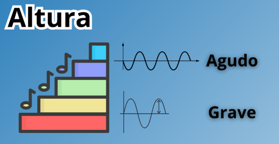

Llamamos altura a la diferencia de sonidos según sean más graves o agudos, ya que los músicos suelen ver los sonidos en una línea ascendente en la que se ordena los sonidos de más graves (abajo) a más agudos (arriba), donde las partituras están organizadas de ésta misma forma. Las notas que están en la zona baja del pentagrama son más graves que las que están en zonas más altas. Según su altura podemos clasificar el sonido como:
- Ascendente: de los graves a los agudos.
- Descendente: de los agudo a los graves.
- Estable: Si la altura del sonido no varía.
A continuación, se presenta un video que le permitirá reforzar su conocimiento.